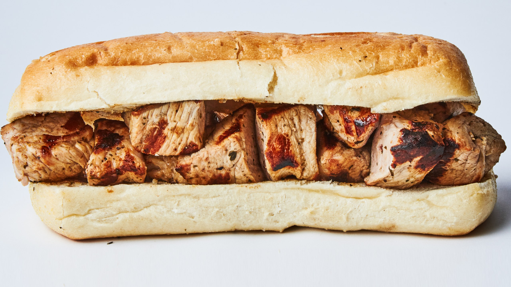

It may not seem like the homeiest place ever, but coming back from a sixteen month tour, I wanted to come back to my roots and settle down for a bit. Imagine my surprise when one of my closest girlfriends told me about this place and how it is "to die for, girly". At first, I didn't really believe her, but now, I can imagine myself comig back for more!
“Seriously Faye, you need to try this, they can do all sorts of stuff and the best part is they treat you like family! Come on, first time is on me!
My first impressions of the place did make me feel out of my element. However, I felt welcome, and most people wouldn't know if I had actually served in the Marines, but people figured it out right quick and I was accepted into the family without hesitation. The chefs were all super nice and they always took the time in between cooking to chat with us.
Now, let me tell you about the first time I ate a Chicken Spiedie Sandwich. It was literal heaven served on a plate. I can just taste it writing this now. I feel so full from eating just one. Wactching the chefs, specifically, Lucas Thorne chop, marinate, and prepare it made my mouth water. For the Spiedies, not for him.
The point is, the amount of time and effort they put into their food make the wait all worthwhile. It doesn't seem like much on the outide, but it is the inside that counts. Once I took that first bite I had to stiffle my reaction, it was less than appropriate, I will admit. My friend was gushing about it and giving me the 'I told you so' look. Can't say I blame her.
I one hundred percent recommend going to the Spiedie and Rib Pit. Your stomach will thank you and you will thank me. For the people who are vegetarian, they do have foods for you too. So if your man, or your woman, goes there, they do have options to. One more fact, they have coffee for free during the week, but it's for the really early birds. It may not be open, but someone is there making sure nothing spoiled over night.

“We may not be open early, but we certainly know that people need caffine in the morning, so come on down to grab a cup of Joe in the morning. -Charlotte King
The resturant is undergoing an address change soon in the future. They are only moving next door, since another place went out of business. So the address will shift in the near future.
Chatting with the chefs, I was surprised to see how devoted hey are to their jobs. Considering the fact that they are only local to here, it makes it seem like they could have more than just here. When I asked Jon-Paul Lang about it, he had this to say. "As much as we want to expand, we decided it was best to stay local, makes the family feel like it is in one place. The place you can always come back to."
He's right though. I felt more connected here than I've ever felt before and this was only my second time here. I even convinced my family to come here and they were blown away. They never thought such a small place could have this high quality service.
Plan a trip down to Spiedie and Rib Pit today, trust me, you will not regret it.